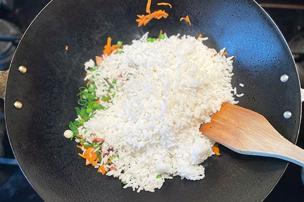

Easy Fried Rice

Description :
Fried rice has long been a staple of Aussie takeaway dinners. And, while we might all have our favourite restaurant that makes Chinese fried rice just the way we like it, satisfying fried rice is a dish that's surprisingly easy to replicate at home. It's also a great way to use up any freshly cooked rice that's been leftover from the night before.
We've been making this particular fried rice for more than 20 years, and it's the version we keep coming back to again and again. Why? It manages to pack in a lot of flavour for surprisingly little effort, and, if you follow our step-by-step tips, you really can create a DIY fried rice dish to rival your local takeaway joint.
Ingreedient :
- White long grain rice
- Soy sauce
- Oil
- Bacon
- Peas
- Eggs
- Shallots
Steps:
Cook the rice in a large saucepan of boiling water for 12 minutes or until tender. Drain and leave to cool.

-
Heat oil in non-stick wok or large frying pan over medium heat. Add eggs. Swirl over base to form an omelette. Cook for 2 minutes or until set. Transfer to a chopping board. Set aside to cool slightly. Roll up and thickly slice.

-
Add bacon to wok. Cook 4 minutes until light golden. Add carrot. Stir fry 1 minute. Add shallots, peas and rice. Cook, stirring, 3-4 minutes. Add egg and soy sauce. Stir until heated through. Sprinkle with sesame seeds and top with extra shallots. Serve immediately.

More recieps